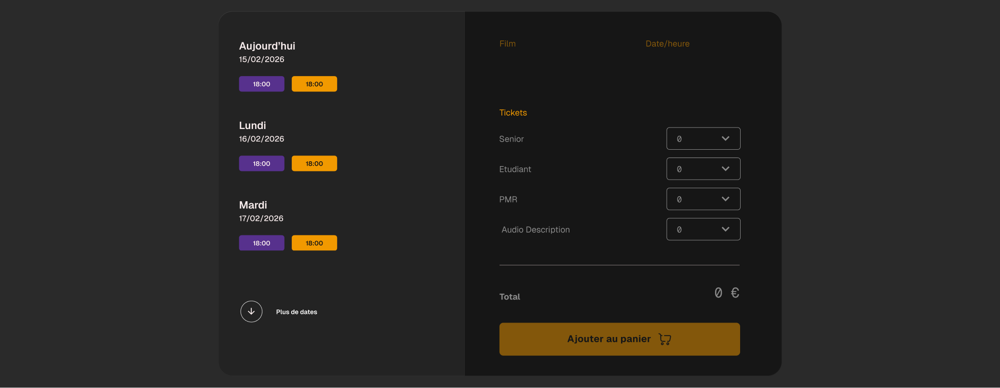
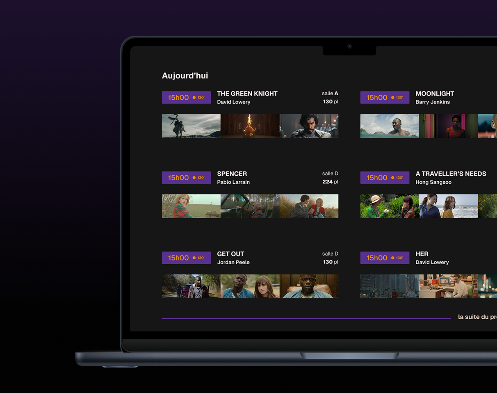
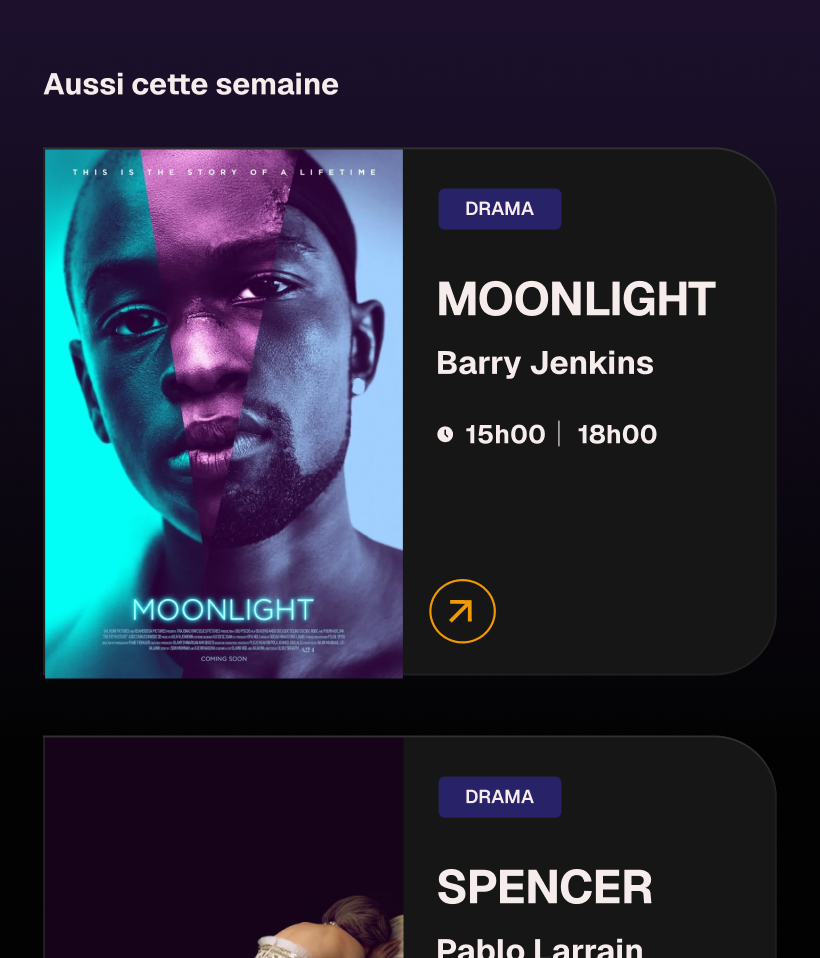
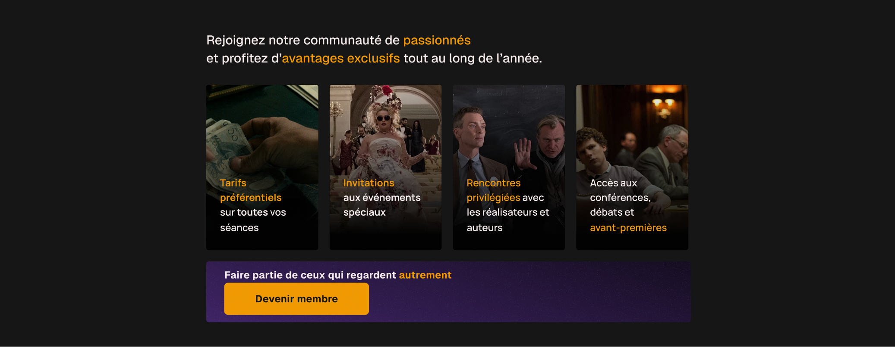

[Project info]
One simple idea : create a website for a small movie theater, Cinémon, to allow users to easily check the schedule and book tickets. The goal was to design a clear and user-friendly interface that would enhance the movie-going experience for customers. The project focused on creating a seamless booking process, providing real-time updates on showtimes, and integrating features that would make it easy for users to find and select their desired movies. The design aimed to reflect the unique atmosphere of Cinémon while ensuring that the website was intuitive and accessible for all users.
Role
UX / UI Design, solo exercise
Type
Desktop site
Platform
Web browser
Focus
User experience



